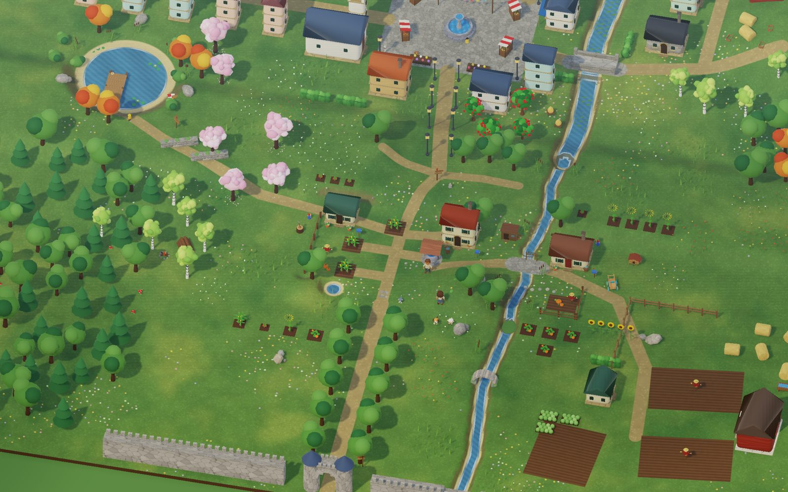
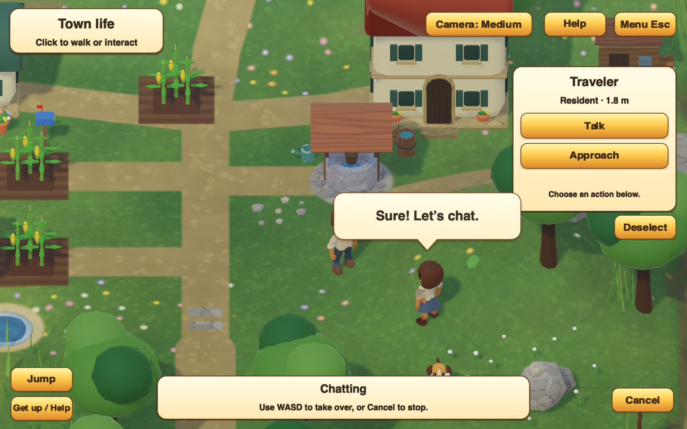
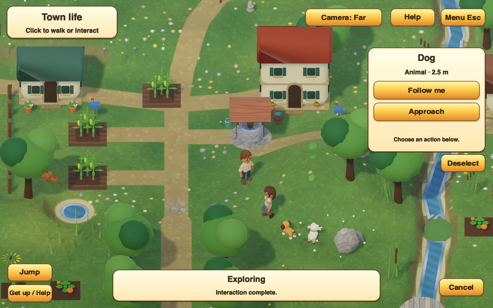
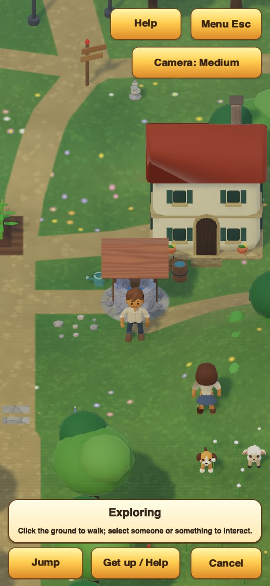
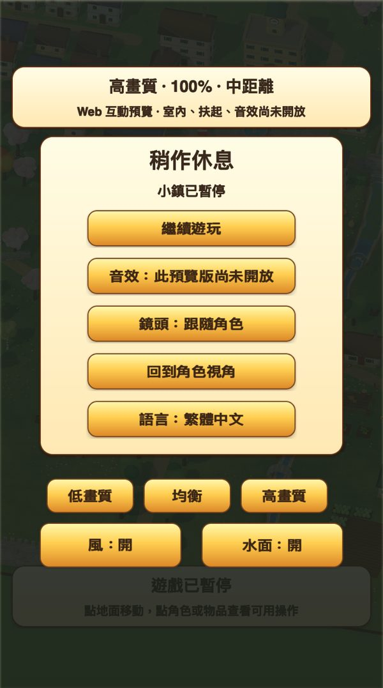

Interactive preview · WebGL 2
Abyss Town
A small living town you can walk around in your browser. Talk to the residents, invite the dog to follow you, and watch the wind move through the trees.
Nothing to install and no account. It runs on your own device; the first visit downloads about 14 MB (55 MB of town data, compressed), and the browser keeps it for next time. 中文介面可在選單切換。

What you can do
Walk in, say hello
- Walk, run and jump. Click or tap the ground, or take over with the keyboard. Fall over and get back up.
- Talk to the residents. Select someone and choose Talk; conversations appear as speech bubbles over their heads.
- Bring the dog along. Ask it to follow you or to wait. It keeps pace when you run.
- Wind and water. Trees, crops and grass sway; the water painted into the ground ripples. Both can be switched off.
- Three camera distances and three picture-quality settings, from light to full quality.
- English and Traditional Chinese, switchable at any time without losing your place.


On a phone
Made for touch too


| Walk | Click / tap the ground, or WASD |
|---|---|
| Run · Jump | Shift · Space or the Jump button |
| Fall · Get up | F · R |
| Talk, follow, wait | Select someone, then choose an action |
| Camera | The camera button cycles Medium, Far and Close; right-drag turns, scroll zooms |
| Menu | Esc or Menu: quality, wind, water, language |
How it’s made
One engine, everything drawn by its own tools
Abyss Town is the meeting point of everything Abyss Engine has been building: the same C code runs it here in WebAssembly and in the native Mac and iPad builds.
Abyss Engine
A portable C11 engine. Movement, conversations, the dog’s following and the residents’ routines are shared game code, not a separate web version.
Abyss UI Maker
Every panel, button and speech bubble is drawn by UI Maker from design recipes, in English and Chinese. The page itself holds only canvases; there are no HTML widgets.
AbyssScript and Behavior IR
What the menus do, and much of what the residents and animals do, is written as small scripts compiled to a compact behaviour program the engine runs.
Models from programs
Houses, props, crops and trees are described by small mesh programs and a building kit in the Abyss mesh editor, then packed into compact binary models: 100 models for 405 objects.
Physics and picture
Jolt Physics for walking, falling and getting up. A WebGL 2 renderer with HDR lighting, soft shadows, ambient occlusion, bloom, authored materials, GPU wind and procedural water.
This is a preview. Going indoors, helping someone up and sound are not in the web version yet. It is tested in Chromium and WebKit (Safari’s engine), on desktop and phone-sized screens; a full pass on real phones is still to come.
Versions
Every version stays playable
- 2026.10.08.2Latest. Tall phone screens see more of the town around you.
- 2026.10.08.1Wind in the trees and crops, water in the ground; Wind and Water switches.
- 2026.10.06.1Touch layout, camera cycling, speech bubbles, more conversations.
- 2026.10.05.4Faster walking, smoother paths, three camera distances.
- 2026.10.05.3First interactive town: residents, the dog, English and Chinese.
- 2026.10.05.2Loading screen, progress and an offline cache.
- 2026.10.05.1First look at the renderer.